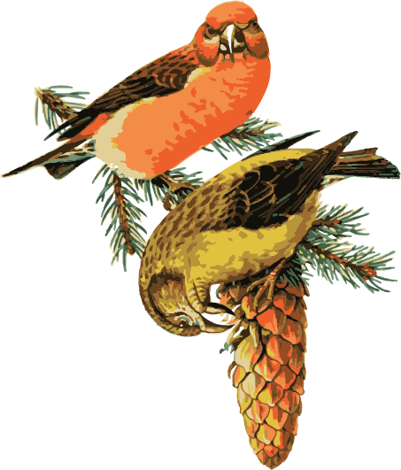

A fascinating finch of coniferous woodlands, the Red Crossbill forages on nutritious seeds in pine, hemlock, Douglas-fir, and spruce cones. Their specialized bills allow them to break into unopened cones, giving them an advantage over other finch species. Because conifers produce seeds unpredictably, Red Crossbills sometimes wander (or “irrupt”) far beyond their usual range. They nest wherever and whenever they find abundant food, sometimes even in winter. Several types of Red Crossbill exist; they each have different calls, feed on particular conifer species, and might represent distinct species.
Red Crossbills eat seeds of spruce, pine, Douglas-fir, hemlock, or larch. To obtain these seeds, they first grasp the cone with one foot (normally, the foot that is on the side opposite to which the lower mandible crosses). They insert the partly open bill between two of the cone’s scales, then close the bill, which widens the space between the scales, exposing the seed. They use the tongue and bill together to remove the seed. When feeding on closed cones of spruce, hemlock, and Douglas-fir, crossbills usually remove the cone from the branch, but if these cones are open, they leave them attached to the branch, as they do with almost all pine cones. Occasionally, they forage on fallen cones on the ground. Before swallowing the seed, they remove the seed coat. Important tree species for Red Crossbill include eastern white pine, pitch pine, Table Mountain pine, loblolly pine, lodgepole pine, red pine, ponderosa pine, Sitka spruce, Engelmann spruce, red spruce, black spruce, white spruce, western hemlock, eastern hemlock, Douglas-fir, and western larch. They sometimes eat seeds of birch and alder species, as well as box elder, along with many kinds of insects in early summer.
Red Crossbills favor mature coniferous forests, especially spruce, pine, Douglas-fir, hemlock, or larch with recent cone crops. Although Red Crossbills mostly breed south of the forests of spruce, fir, and larch where White-winged Crossbills breed most abundantly, the two species forage together in white spruce and Engelmann spruce forests in late summer, when cone crops are extensive. In North America, Red Crossbill comprises at least 11 different “types” (distinguished in the field by their flight calls), many of which specialize on particular species of conifer. For example, the small-billed type 3 favors western hemlock, which has very small cones, whereas the largest-billed type 6, found in the Southwest, feeds on larger-coned pine species. Birders have begun to make audio and video recordings of Red Crossbill, both to identify the type involved and to identify the species of conifer in which they feed.
Nests, built mostly by the female, are usually sited in open rather than dense woodlands; nests are built inside dense foliage, on branches, next to or near the trunk, up to about 70 feet above the ground.
Bulky cup nests are built largely of conifer twigs, with the cup lined with grasses, weeds, seed-pod fibers, lichens, conifer needles, feathers, bark, or hair. Nests average about 9 inches across, and 2 inches tall, with the inner cup 2.4 inches across and 1 inch deep.